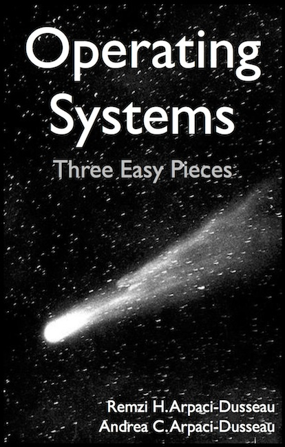

M16 - Estruturas de dados com locks
Prof. Nicola

Operating Systems: Three Easy Pieces
Capítulos 28 e 29
ostep.org · gratuito
Um flag na memória
void lock(lock_t *m) {
while (m->flag == 1)
; // gira
m->flag = 1;
}
void unlock(lock_t *m) {
m->flag = 0;
}
T1
T2
flag
lê flag: 0
0
lê flag: 0
0
flag = 1
1
flag = 1
1
seção crítica
seção crítica
sem exclusão mútua
Desligar as interrupções
void lock() {
DisableInterrupts();
}
void unlock() {
EnableInterrupts();
}
Com uma CPU, nada interrompe a seção crítica.
Com várias CPUs, as outras continuam rodando.
E um aplicativo não pode desligar interrupções.
Test-and-set
int TestAndSet(int *p, int novo) {
int velho = *p;
*p = novo;
return velho;
} // tudo de uma vez, atômico
void lock(lock_t *m) {
while (TestAndSet(&m->flag, 1) == 1)
; // gira
}
O hardware lê o valor antigo e escreve o novo numa instrução só.
Lê e escreve numa instrução só. Veio 0: o lock é meu. Veio 1: tento de novo.
x86: xchg
Compare-and-swap
int CAS(int *p, int esperado, int novo) {
int atual = *p;
if (atual == esperado)
*p = novo;
return atual;
} // atômico
void lock(lock_t *m) {
while (CAS(&m->flag, 0, 1) == 1)
; // gira
}
Só escreve se o valor ainda for o esperado.
Só escreve se achou o esperado. Achou 0: o lock é meu. Achou 1: tento de novo.
x86: lock cmpxchg
Load-linked e store-conditional
void lock(lock_t *m) {
while (1) {
while (LL(&m->flag) == 1)
; // gira
if (SC(&m->flag, 1) == 1)
return; // consegui
}
}
T1
T2
LL: 0
LL: 0
SC: grava
SC: falha
ARM: ldxr e stxr
Fetch-and-add e o ticket lock
void lock(lock_t *l) {
int eu = FetchAndAdd(&l->ticket);
while (l->turn != eu)
; // gira
}
void unlock(lock_t *l) {
l->turn = l->turn + 1;
}
Pega uma senha.
Espera a sua vez.
Chama a próxima senha.
Senha, espera, próxima: todos entram, na ordem de chegada.
x86: lock xadd
O que o hardware resolve
Girando à toa, numa CPU
seção crítica
girando
esperando a CPU
A dona do lock perdeu a CPU no meio da seção crítica.
Cada uma das outras gira um quantum inteiro.
Com N threads, N − 1 quanta jogados fora.
Ceder a CPU
void lock(lock_t *m) {
while (TestAndSet(&m->flag, 1) == 1)
yield(); // cede a CPU
}
seção crítica
tenta e cede
esperando a CPU
O giro some: quem acha o lock ocupado sai da CPU.
Mas cada tentativa custa uma troca de contexto.
Sem giro, mas uma troca por tentativa, e nenhuma garantia de ordem.
Dormir numa fila
void lock(lock_t *m) {
while (TestAndSet(&m->guard, 1) == 1)
; // gira pouco: só o guard
if (m->flag == 0) {
m->flag = 1;
m->guard = 0;
} else {
queue_add(m->q, gettid());
m->guard = 0;
park(); // dorme
}
}
Um spin lock curto protege só a fila e o flag.
Livre: pega o lock.
Ocupado: entra na fila e dorme. O guard só protege a fila.
Quem libera, passa o lock adiante
void unlock(lock_t *m) {
while (TestAndSet(&m->guard, 1) == 1)
;
if (queue_empty(m->q))
m->flag = 0;
else
unpark(queue_remove(m->q));
m->guard = 0;
}
Ninguém esperando: o lock fica livre.
Alguém esperando: acorda a primeira da fila.
Acorda a primeira da fila, e o lock passa direto para ela.
Acordar antes de dormir
T2, que vai dormir
T1, a dona do lock
queue_add(q, T2);
guard = 0;
unlock(): unpark(T2);
park(); dorme para sempre
corrida entre acordar e dormir
queue_add(m->q, gettid());
setpark();
m->guard = 0;
park();
Se o unpark() vier antes, o park() volta na hora.
O mutex do Linux: um inteiro só
ocupado?
quantas threads esperam
bit 31bits 0 a 30
Sem disputaUma instrução atômica pega o lock, sem chamar o SO.
Com disputafutex_wait dorme na fila do kernel; futex_wake acorda.
futex
Lock em duas fases
gira um pouco
dorme na fila
fase 1fase 2, se não conseguiu
Se o lock vai ser liberado logo, girar sai mais barato que dormir.
Linux: tenta uma vez, depois dorme
Girar ou dormir?
cenário 1
Uma CPU, seção crítica longa
Dormir. A dona do lock não está rodando: girar não adianta.
cenário 2
Várias CPUs, seção crítica curta
Girar (ou duas fases). A espera é menor que o custo de dormir.
Placar completo
Vocês já conhecem estas
E se várias threads usarem ao mesmo tempo?
do M13
Um contador
typedef struct {
int value;
} counter_t;
void increment(counter_t *c) {
c->value++;
}
int get(counter_t *c) {
return c->value;
}
Um contador, um lock
typedef struct {
int value;
pthread_mutex_t lock;
} counter_t;
void increment(counter_t *c) {
pthread_mutex_lock(&c->lock);
c->value++;
pthread_mutex_unlock(&c->lock);
}
correto
Desempenho: um lock
não escala
O contador aproximado
↓ ao chegar a S ↓
global lock
S = 5
| L1 | L2 | L3 | L4 | G |
|---|
| 0 | 0 | 0 | 0 | 0 |
| 0 | 0 | 1 | 1 | 0 |
| 1 | 0 | 2 | 1 | 0 |
| 2 | 0 | 3 | 1 | 0 |
| 3 | 0 | 3 | 2 | 0 |
| 4 | 1 | 3 | 3 | 0 |
| 5 → 0 | 1 | 3 | 4 | 5 |
| 0 | 2 | 4 | 5 → 0 | 10 |
Escolhendo S
S
S maior → escala melhor, global mais atrasado
S = 1 → pior que um lock só
exato → somar os locais, com os locks
Novo desempenho
escala
Uma lista ligada
void List_Insert(list_t *L, int key) {
node_t *new = malloc(sizeof(node_t));
new->key = key;
new->next = L->head;
L->head = new;
}
int List_Lookup(list_t *L, int key) {
node_t *curr = L->head;
while (curr) {
if (curr->key == key) return 0; // achou
curr = curr->next;
}
return -1;
}
M13
Uma lista ligada, um lock
void List_Insert(list_t *L, int key) {
node_t *new = malloc(sizeof(node_t));
if (new == NULL) { perror("malloc"); return; }
new->key = key;
pthread_mutex_lock(&L->lock);
new->next = L->head;
L->head = new;
pthread_mutex_unlock(&L->lock);
}
O malloc fica fora do lock: se falhar, não há lock para esquecer de liberar.
O malloc fica fora; o lock protege só a cabeça da lista.
correto
Desempenho: um lock
não escala
Um lock por nó?
Pega o lock do próximo nó antes de soltar o do atual.
Solta o atual e segue. Outras threads trabalham em outros pontos.
Mas cada nó custa um lock e um unlock a mais.
Novo desempenho
mais lento
Uma fila, um lock
lock
head↓
tail↓
dequeue tira da cabeça; enqueue põe na cauda.
Correto, mas enqueue e dequeue esperam um pelo outro.
M13: fila FIFO
Desempenho: um lock
não escala
Uma fila, dois locks
head_lock↓
tail_lock↓
dequeue só mexe na cabeça; enqueue, só na cauda.
Com o nó fictício, enqueue nunca mexe em head, e dequeue nunca mexe em tail.
Novo desempenho
melhora, mas não escala
Uma tabela hash, um lock
lock
Cada bucket é uma lista ligada.
Correto, mas uma inserção por vez, em qualquer bucket.
M13: hash com encadeamento
Desempenho: um lock
não escala
Uma tabela hash, um lock por bucket
T1 e T2 inserem ao mesmo tempo, em buckets diferentes.
T3 espera só porque caiu no mesmo bucket que T2.
Novo desempenho
escala
Para pensar
O que pesa mais: o lock em si ou quantas threads disputam o mesmo lock?
Mais locks é sempre mais rápido?
Quando um lock só já basta?
Lista de exercícios
25
questões dos capítulos 26 a 29, com explicação de cada alternativa.
Depois, as dissertativas.